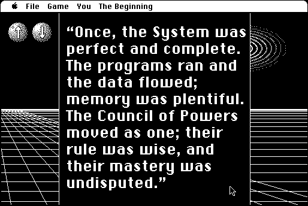

Download
systems-twilight-110.zip (557K) System's Twilight 1.1.0 repackaged into a zipped hfs disk image and checksum file. The disk image can be mounted with Mini vMac.
systems-twilight-110.hqx (791K) System's Twilight 1.1.0 in the original format.
copyright: Andrew Plotkin
mod date: Jan 9, 2000
license: free for non-commercial use
official url :
System's Twilight
"An abstract Fairy Tale". A puzzle game.

If you find these downloads useful, please consider helping the Gryphel Project, which hosts them.
Here are the md5 checksums for the downloads, signed with Gryphel Key 5:
--------- GRY SIGNED TEXT --------- 644febbf087d509d0e0ee2b07aed7146 systems-twilight-110.zip cb06acca685c57fa249fc9ab3cbcb295 systems-twilight-110.hqx ------- BEGIN GRY SIGNATURE ------- Gry/4Xa8CFcUzxdN/FQX113PSdOFbS6W4IxV6WbGWMRXhwz/yCWyk9GFoNWgobUK O1i6I/MQOSWakTFDWFHiErN5WBGLEm1Sy8CxzjYsxCEj6Hyl4QiDFygSRIjtHjk+ qaXo3SEYmLcoaOKclyJis3lcZ8f4qvEacSjLMfcYANg2NcMxF1tpQN+Aeg+hYC/M -------- END GRY SIGNATURE --------